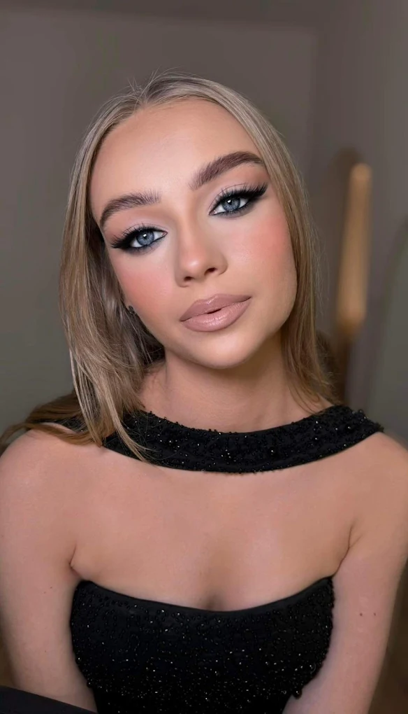

Julia Bednarska
Makijaż, który trzyma się cały wieczór. Nie tylko na pierwszym zdjęciu.
O mnie
Wizaż to dla mnie precyzja i wyczucie w jednym. Każda twarz jest inna, więc każdy makijaż zaczynam od nowa, dopasowany do okazji i do osoby, która go nosi.
Pracownia znajduje się w Radomsku, przy ulicy Narutowicza. Umów się telefonicznie albo napisz na Instagramie, tam na bieżąco pokazuję swoje metamorfozy.
Metamorfozy
Kilka ostatnich realizacji. Od naturalnego blasku po mocny, wieczorowy look.
.webp)

.webp)
.webp)
.webp)
Opinie
5,0 z 10 opinii w Google.
Makijaż wytrwał całą imprezę i nie wymagał żadnej poprawki. Polecam z całego serduszka 🫶🏼
Natalia Lebelt · Opinia Google · miesiąc temu
Bardzo staranny i trwały makijaż, każdy detal został dopracowany tak, aby pasował do urody i preferencji klienta. Polecam utalentowaną i przemiłą Panią Julię ❤️
Oliwia Jankowska · Opinia Google · miesiąc temu
Bardzo dokładnie wykonuje make-up, widać że kocha malować, robi to z pasją. Polecam.
Aga O · Opinia Google · 2 miesiące temu
Polecam bardzo serdecznie! Makijaż przepiękny, trzymał się całą imprezę ❤️❤️
Natalia Knychalska · Opinia Google · 2 miesiące temu
Piękny, trwały makijaż, świetnie dopasowany do urody i stylizacji. Polecam!
Julia · Opinia Google · miesiąc temu
Polecam
Jakub Zatoń · Opinia Google · miesiąc temu
Godziny i kontakt
- Cały tydzień
- godziny do potwierdzenia
Dokładne godziny pracowni pojawią się tutaj wkrótce. Zadzwoń, żeby ustalić dogodny termin.
Julia Bednarska Makeup Artist
ul. Narutowicza 22a
97-561 Radomsko